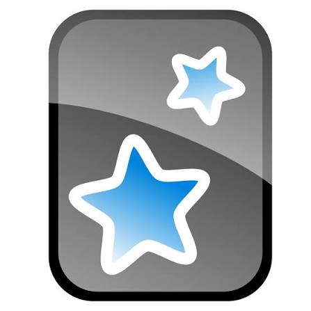

在原文里，理解它
阅读正文或观看字幕时查词，结合当前例句查看含义，留意它在这里的用法。
把时间留给自己想读、想看的内容。
需要理解、记录或练习时，工具就在旁边。
把想读的书放在一起，按每日词数或章节安排阅读。回到书架，接着上次的进度往前读。
先选择适合自己的材料，再把一本书拆成可以持续的小步。
先了解阅读方法 ↗产品界面实拍 · 阅读计划
截图展示当前开发界面；可用功能、系统要求与权益以正式发布版本为准。
先理解内容，再选择值得留下的词句。
把一次相遇，接到之后的回忆和使用。
阅读正文或观看字幕时查词，结合当前例句查看含义，留意它在这里的用法。
从阅读选句或影视字幕进入跟读，听原声、录下自己，再交替对比。原音片段可以微调。
把原句补进 COCA 主卡，或发送到生词本。连接配置完成后，将选中的学习内容带到 Anki。
了解两种发送方式 ↗
发送前需要在电脑上启动 Anki、安装并启用 AnkiConnect，配置牌组与字段。未发送的内容可在“待发送中心”检查处理。
Windows 与 macOS，四个版本入口。
安装包准备好后，会在这里开放下载。
正在识别系统；也可以直接选择下方版本。
可以手动切换系统与芯片，当前没有可下载的安装包。
版本号与最低系统要求将在发布时说明。
打开“设置 → 系统 → 关于”，找到“系统类型”。查看操作系统位数和处理器类型。ARM 电脑请等待兼容性说明。
打开苹果菜单中的“关于本机”。显示“芯片 Apple M…”选择 Apple 芯片版；显示“处理器 Intel…”选择 Intel 版。
自动识别仅作为选择参考。部分浏览器无法提供处理器信息，请以电脑的系统信息为准。
不必一次用完所有功能。
围绕今天想读、想看的内容，走完一个小循环。
先了解运行方式，
再安排适合自己的学习环境。
暂时还不可以。本页先展示功能和版本入口，安装包发布后会开放对应下载按钮。Windows 32 位仍需确认适配，其他版本的系统要求也会随安装包公布。
部分浏览器只会告诉我们你在使用 Mac，无法可靠区分 Intel 和 Apple 芯片。可以在“关于本机”中确认，再手动选择。我们不会仅凭浏览器显示的“Intel Mac”就推断你的处理器。
本地影视与跟读使用你选择的媒体文件，跟读录音和相关练习记录保存在本机。账户、在线阅读、查词或 AI 等服务仍按各自功能联网处理，不等同于整个软件都离线运行。
目前不会。网页与客户端分别保存本地练习，可通过支持的备份导出、导入方式迁移。清理浏览器站点数据前，请先保存需要保留的跟读记录。
需要在电脑上安装并启动 Anki，启用 AnkiConnect，并在读书会中配置连接、牌组和字段。发送失败时，检查本地连接，再到待发送中心查看处理状态。
这里展示的是听原声、录音和交替对比的练习方式，不提供自动发音评分。阅读原音需要自行添加；自动定位的候选片段需要试听确认，也可以手动调整。跟读功能仍需完成目标平台的实机验收。